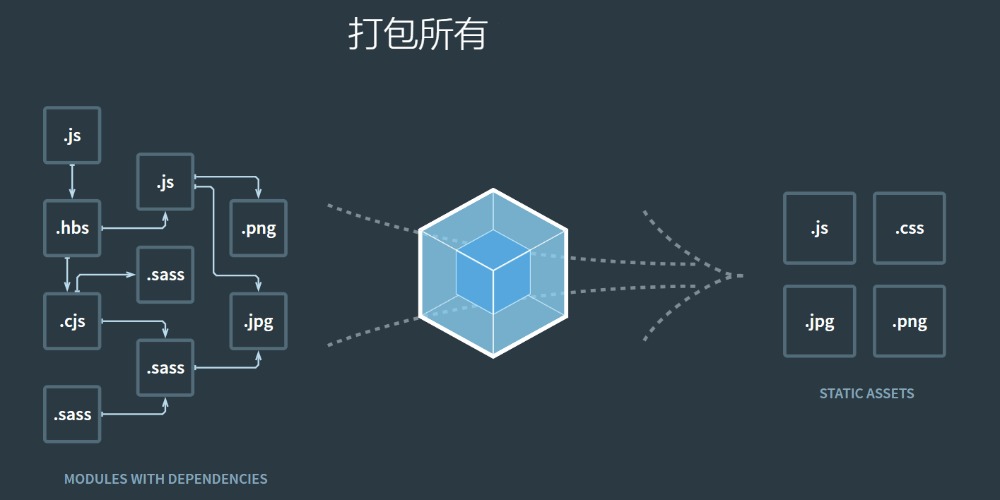

ECMAScript 6
本书覆盖 ES6 与上一个版本 ES5 的所有不同之处，对涉及的语法知识给予详细介绍，并给出大量简洁易懂的示例代码。 本书为中级难度，适合已经掌握 ES5 的读者，用来了解这门语言的最新发展；也可当作参考手册，查寻新增的语法点。如果你是 JavaScript 语言的初学者，建议先学完《JavaScript 语言入门教程》，再来看本书。
JavaScript
JavaScript 是属于 HTML 和 Web 的编程语言。 编程令计算机完成您需要它们做的工作。 JavaScript 很容易学习。 本教程涵盖 JavaScript 基础和高级教程。

Vue
渐进式JavaScript 框架灵活.易用.高效

CSS
层叠样式表(英文全称：Cascading Style Sheets)是一种用来表现HTML（标准通用标记语言的一个应用）或XML（标准通用标记语言的一个子集）等文件样式的计算机语言。CSS不仅可以静态地修饰网页，还可以配合各种脚本语言动态地对网页各元素进行格式化。

HTML5
HTML5是Web中核心语言HTML的规范，用户使用任何手段进行网页浏览时看到的内容原本都是HTML格式的，在浏览器中通过一些技术处理将其转换成为了可识别的信息。HTML5在从前HTML4.01的基础上进行了一定的改进，虽然技术人员在开发过程中可能不会将这些新技术投入应用，但是对于该种技术的新特性，网站开发技术人员是必须要有所了解的。- 
webpack
本质上，webpack 是一个现代 JavaScript 应用程序的静态模块打包器(module bundler)。当 webpack 处理应用程序时，它会递归地构建一个依赖关系图(dependency graph)，其中包含应用程序需要的每个模块，然后将所有这些模块打包成一个或多个 bundle。